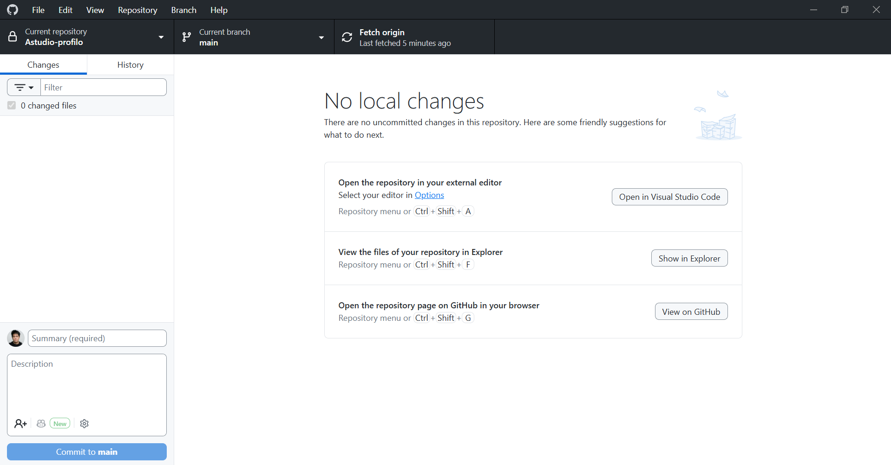
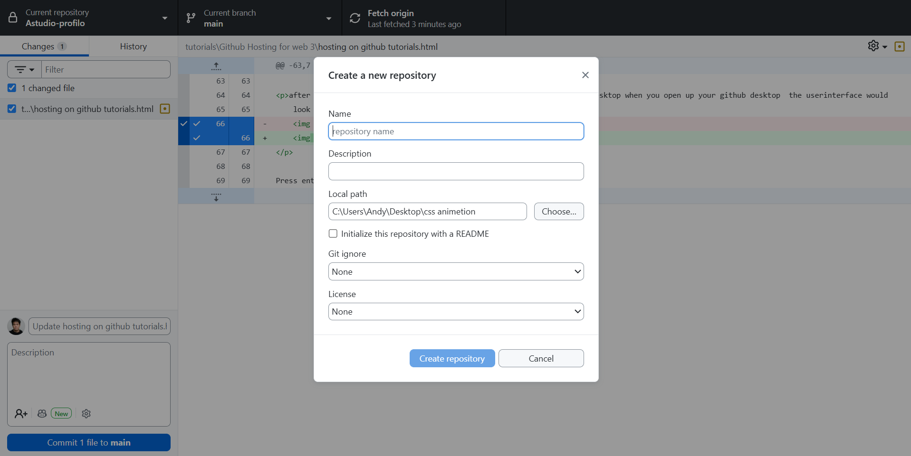
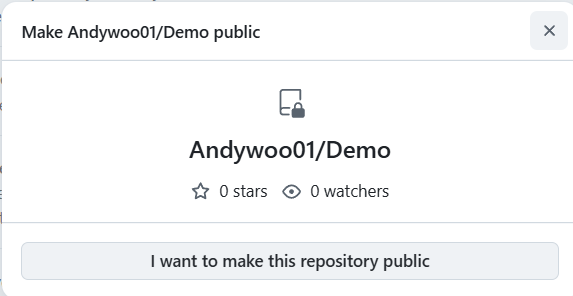
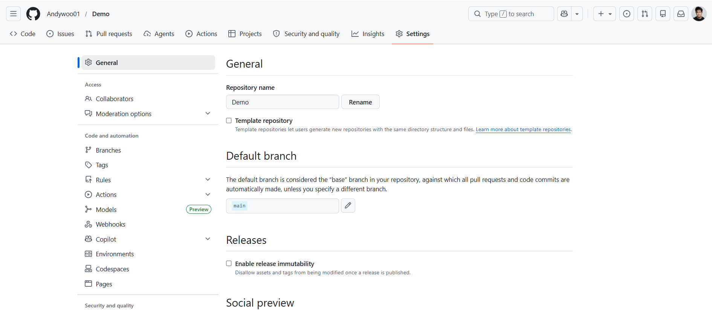

How to make a basic website for free tutorial .
To get started to how to build for your website you need a few tings to get started.
you will need a text editor to write your code and somewhere to host your website
the most common the editor is visual studio code editor
Download here
Visual Studio Code
Note for Mac users there are few options available for you i will list them below
To Host your Website you will need to download github desktop and make a account
Download Here
GitHub Desktop5.you will need some here to host your website go to github.com to make a account.

6.after you finshed sign up you will need to download github to host your website
 Press enter or click to view image in full size
Press enter or click to view image in full size
after you finshed makeing account for github and and installed github desktop when you open up your github desktop the userinterface would look like this

then click of file go to new repository

Note:make a folder a folder for your Repository put it where you want to store your code do these steps before proceeding
you should see this inerface click on Local path find the folder where you want to put in your code and afther that click on create Repository
after you click create the repository click on publish repository
now go your git hub account you have created go to settings scroll down till the bottom go to the section says danger zone click on the button says change visibility click on change to public then is interface should pop up

aftherthat go back to settings of the leftside of go to the bottom that says pages

8.open up you github desktop your user interface should look like this
9. then go to file click on new Repository
10. then go to new Repository
11.11. and you should see this interface click on local path to find the folder where you wanted to store you code on your computer.
12.now open up you text editor for this this tutioral i have choose to use brackets.
13 click on open find the folder that you made
14your userinface should look like this go to file and click on new you have a file called untited rename to index on the bottom right you should click on text pick html
17.after you finshed writhing your html